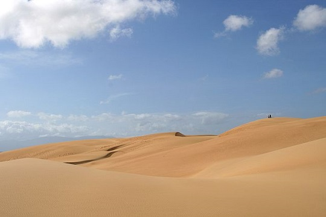
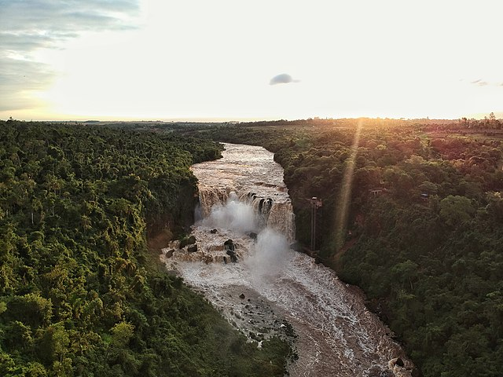

Destination Page
Select a Destination
Click in a Coountry to see the turistic places
Venezuela
Click here for more info
Tourism in Venezuela has been developed considerably for decades, particularly because of its geographical position, the variety of landscapes, the richness of plant and wildlife, the artistic expressions and the privileged tropical climate of the country, which affords each region (especially the beaches) throughout the year. Since 2013 the country is having a very severe economic and political crisis affecting tourism all over the country.
Angel Falls

Angel Falls (Spanish: Salto Ángel; Pemon language: Kerepakupai Merú meaning "waterfall of the deepest place", or Parakupá Vená, meaning "the fall from the highest point") is a waterfall in Venezuela. It is the world's tallest uninterrupted waterfall, with a height of 979 metres (3,212 ft) and a plunge of 807 m (2,648 ft). The waterfall drops over the edge of the Auyán-tepui mountain in the Canaima National Park (Spanish: Parque Nacional Canaima), a UNESCO World Heritage site in the Gran Sabana region of Bolívar State. The height figure, 979 m (3,212 ft), mostly consists of the main plunge but also includes about 400 metres (1,300 ft) of sloped cascade and rapids below the drop and a 30-metre (98 ft) high plunge downstream of the talus rapids.
The falls are along a fork of the Río Kerepacupai Merú which flows into the Churún River, a tributary of the Carrao River, itself a tributary of the Orinoco River.
Morrocoy National Park
Morrocoy National Park is located in the easternmost coast of Falcón state and northwestern of Golfo Triste, in the west central Venezuelan coast, near the towns of Boca de Aroa, Tucacas, Sanare, Chichiriviche, Flamenco and Tocuyo de la Costa, and consists of 12,990 hectares (32,090 acres). It was declared a national park on May 26, 1974 by Executive Order No. 113, Official Gazette No. 30408 on May 27, 1974.
The park extends across both terrestrial and aquatic areas of Golfo Triste. It contains an area of mangroves and numerous islets or cays among which are Borracho, Muerto, Sombrero, Sal, Las Animas and Peraza, among others. There are spectacular white sand beaches on these cays; Mero, Paiclas, los Juanes, Playuela, Tucupido, Azul, Boca Seca and many more. The park's internal bays and mangroves, cays and islands sit in the relief of Chichiriviche hills, with elevations of 250 m.
Médanos de Coro National Park
Médanos de Coro National Park (Parque Nacional Los Médanos de Coro) is a Venezuelan national park located in the state of Falcón, near the city of Coro on the road that leads to Paraguaná. The National Park was created in 1974. The park is easily reached by bus or taxi from Coro.

The Médanos park protects part of the Paraguana xeric scrub ecoregion. It lies on the Médanos Isthmus and covers 91 km2 (35 sq mi) of desert and coastal habitat, including salt marshes. It is made up of three zones: an alluvial plain, formed by the delta of the Mitare River and some smaller streams; an aeolian plain, composed of three types of dunes; and a littoral plain with a belt of mangrove swamps. The massive sand dunes, known as Médanos, spread over an area of approximately 5 by 30 km (3.1 by 18.6 mi). They can reach 40 m (130 ft) in height and are constantly transformed by the unrelenting wind.
Rainfall is rare. However, during the severe floods that struck Venezuela in December 1999 ("Vargas tragedy", being especially devastating in Vargas State), the heavy rain formed four lagoons in the dunes; a circumstance that the park guards had never witnessed before.
Flora consists of little more than thorny shrubs. The park is an Important Bird Area with some 21 species including Yellow-shouldered amazon. Other fauna is scarce; the park is home mainly to lizards, rabbits, anteaters and foxes. Visitors can wander amongst the dunes by camel (imported many years ago).
Click here to go back to the Map
Colombia
Click here for more info
Colombia has major attractions for a tourist destination, such as Cartagena and its historic surroundings, which are on the UNESCO World Heritage List; the insular department of San Andrés, Providencia y Santa Catalina; and Santa Marta and the surrounding area. The coffee region is also a very popular destination, especially the traditional town of Salento,_Quindío and its surroundings. Fairly recently, Bogotá, the nation's capital, has become Colombia's major tourist destination because of its improved museums and entertainment facilities and its major urban renovations, including the rehabilitation of public areas, the development of parks, and the creation of an extensive network of cycling routes. With its very rich and varied geography, which includes the Amazon and Andean regions, the Llanos, the Caribbean and Pacific coasts, and the deserts of La Guajira and Tatacoa Desert, and its unique biodiversity, Colombia also has major potential for ecotourism.
Chiribiquete National Park
Chiribiquete National Natural Park (Spanish: Parque Nacional Natural (PNN) Serranía de Chiribiquete) is the largest national park in Colombia and the largest tropical rainforest national park in the world. It was established on 21 September 1989 and has been expanded twice, first in August 2013 and then in July 2018. The park occupies about 43,000 km2 (17,000 sq mi) and includes the Serranía de Chiribiquete mountains and the surrounding lowlands, which are covered by tropical moist forests, savannas and rivers.
Chiribiquete National Natural Park was established on 21 September 1989. The park was expanded from the previous 13,000 km2 (5,000 sq mi) to 28,000 km2 (11,000 sq mi) on 21 August 2013. Colombian president Juan Manuel Santos announced that Chiribiquete National Park would be expanded by 15,000 km2 (5,800 sq mi) on 21 February 2018. The park was expanded to 43,000 km2 (17,000 sq mi) and declared a World Heritage site by UNESCO on 2 July 2018.
Researchers have discovered 209 butterfly species, 238 fish species, 57 amphibian species, 60 reptile species, over 410 bird species and 82 mammal species in Chiribiquete to date, many of which are threatened and endemic to the region. The region is known for hosting high levels of endemism of amphibians and freshwater fish. It also hosts about 30% of the Colombian Amazon's bat diversity and 10% of the country's butterfly diversity.
Tayrona National Natural Park
The Tayrona National Natural Park (Spanish: Parque Nacional Natural Tayrona) is a protected area in the Colombian northern Caribbean region and within the jurisdiction of the city of Santa Marta, 34 kilometres (21 mi) from the city centre. The park presents a biodiversity endemic to the area of the Sierra Nevada de Santa Marta mountain range, featuring a variety of climates (mountain climate) and geography that ranges from arid sea level to 900 meters above sea level. The park covers approximately 30 square kilometres (12 sq mi) of maritime area in the Caribbean sea and approximately 150 square kilometres (58 sq mi) of land.
It was the second most visited national park in Colombia in 2019, with 458,755 visitors.
Scholars have done an extensive classification of animal species living in the park, which include about 108 species of mammals and 300 species of birds. The Mantled howler, the oncilla, deer and more than 70 species of bats are among the park's typical residents.
The park's 300 species of birds include the montane solitary eagle, the military macaw, black-backed antshrike, white-bellied antbird and the lance-tailed manakin. There are also approximately 31 species of reptiles, 15 species of amphibians, 202 species of sponges, 471 species of crustaceans, 96 species of annelids, 700 species of molluscs, 110 species of corals and 401 species of sea and river fish.
Bogota
The hotels in the historical center of La Candelaria and its surrounding areas cater to lovers of culture and the arts. This area also has the bulk of hostels in the city as well. In La Candelaria, there are many museums, including the Botero Museum and the Gold Museum. Close to La Candelaria is the Cerro Monserrate, which you can reach by cable car or funicular. The hotels located near Ciudad Salitre are intended for visitors who make short stops in Bogotá and near El Dorado International Airport.
Important landmarks and tourist stops in Bogotá include the botanical garden José Celestino Mutis, the Quinta de Bolívar, the national observatory, the planetarium, Maloka, the Colpatria observation point, the observation point of La Calera, the monument of the American flags, and La Candelaria (the historical district of the city). There is also Usaquen, a colonial landmark where brunch and a flea market on Sundays is a traditional activity. The city has numerous green parks and amusement parks like Salitre Magico or Mundo Aventura.
Green areas surrounding Bogotá are perfect locations for eco-tourism and hiking activities. In the eastern mountains of the city, just a few minutes walking from main roads, there are Quebrada La vieja and Chapinero Waterfalls, two of many green spots for sightseeing and tourism with clean air.
There are also several areas of the city where fine restaurants can be found. The G Zone, the T Zone, and La Macarena are well known for their gastronomic offerings.
Click here to go back to the Map
Brazil
Click here for more info
Tourism in Brazil is a growing sector and key to the economy of several regions of Brazil. The country had 6.589 million visitors in 2018, ranking in terms of the international tourist arrivals as the second main destination in South America after Argentina and third in Latin America after Mexico and Argentina. Revenues from international tourists reached US$5.8 billion in 2015, continuing a recovery trend from the 2008–2009 economic crisis.
Brazil offers for both domestic and international tourists an ample range of options, with natural areas being its most popular tourism product, a combination of leisure and recreation, mainly sun and beach, and adventure travel, as well as historic and cultural tourism. Among the most popular destinations are the Amazon Rainforest, beaches and dunes in the Northeast Region, the Pantanal in the Center-West Region, beaches at Rio de Janeiro and Santa Catarina, cultural and historic tourism in Minas Gerais and business trips to São Paulo city.
Rio de Janeiro
Rio de Janeiro is Brazil's primary tourist attraction and resort. It receives the most visitors per year of any city in South America with 2.82 million international tourists a year.
The city boasts world-class hotels, like Belmond Copacabana Palace, approximately 80 kilometers of beaches and the famous Corcovado, Sugarloaf mountains and Maracanã Stadium. While the city had in past had a thriving tourism sector, the industry entered a decline in the last quarter of the 20th century. Annual international airport arrivals dropped from 621,000 to 378,000 and average hotel occupancy dropped to 50% between 1985 and 1993.
The fact that Brasília replaced Rio de Janeiro as the Brazilian capital in 1960 and that São Paulo replaced Rio as the country's commercial, financial and main cultural center during the mid-20th century, has also been cited as a leading cause of the decline.
Rio de Janeiro's government has since undertaken to modernize the city's economy, reduce its chronic social inequalities, and improve its commercial standing as part of an initiative for the regeneration of the tourism industry.
The city is an important global LGBT destination, 1 million LGBT tourists visiting each year. The Rua Farme de Amoedo is located in Ipanema, a famous neighborhood in the South Zone of Rio de Janeiro. The street and the nearby beach, famous tourist spots, are remarkable for their popularity in the LGBT community. Rio de Janeiro is the most awarded destination by World Travel Awards in the South American category of "best destination".
Fernando de Noronha

The beaches of Fernando de Noronha are promoted for tourism and recreational diving. The most popular ones include Baía do Sancho, Pig Bay, Dolphins Bay, Sueste Bay and Praia do Leão. Due to the South Equatorial Current that pushes warm water from Africa to the island, diving to depths of 30 to 40 metres (98 to 131 ft) does not require a wetsuit. The visibility underwater can reach up to 50 metres (160 ft).
The part of the island facing the mainland has the beaches in the following order: Baía do Sancho, Baía dos Porcos, Praia da Cacimba do Padre, Praia do Bode, Praia dos Americanos, Praia do Boldró, Praia da Conceição, Praia do Meio and Praia do Cachorro. The part of the island facing the Atlantic Ocean has only three beaches: Praia do Leão, Praia do Sueste and Praia do Atalaia. A great way to get to know the island is to walk from Praia dos Americanos, pass by Praia do Boldró, Praia da Conceição, Praia do Meio and finish the walking at Praia do Cachorro.
The islands of this archipelago are the visible parts of a range of submerged mountains. It consists of 21 islands, islets and rocks of volcanic origin. The main island has an area of 18 km2 (6.9 sq mi), being 10 km (6.2 mi) long and 3.5 km (2.2 mi) wide at its maximum. The base of this enormous volcanic formation is 756 metres (2,480 ft) below the surface. The volcanic rocks are of variable though mainly silica-undersaturated character with basanite, nephelinite and phonolite among the lava types found.[34] The main island, from which the group gets its name, makes up 91% of the total area; the islands of Rata, Sela Gineta, Cabeluda and São José, together with the islets of Leão and Viúva make up the rest. The central upland of the main island is called the Quixaba
Iguazu Falls, Paraná
The falls may be reached from two main towns, with one on either side of the falls: Foz do Iguaçu in Brazil and Puerto Iguazú in Argentina, as well as from Ciudad del Este, Paraguay, on the other side of the Paraná River from Foz do Iguaçu, each of those three cities having commercial airports. The falls are shared by the Iguazú National Park (Argentina) and Iguaçu National Park (Brazil). The two parks were designated UNESCO World Heritage Sites in 1984 and 1986, respectively.
The first proposal for a Brazilian national park aimed at providing a pristine environment to "future generations", just as "it had been created by God" and endowed with "all possible preservation, from the beautiful to the sublime, from the picturesque to the awesome" and "an unmatched flora" located in the "magnificent Iguaçu waterfalls". These were the words used by André Rebouças, an engineer, in his book Provinces of Paraná, Railways to Mato Grosso and Bolivia, which started up the campaign aimed at preserving the Iguaçu Falls in 1876. At this time, Yellowstone National Park in the US, the first national park in the world, was four years old.
On the Brazilian side, a walkway along the canyon has an extension to the lower base of Devil's Throat. Helicopter rides offering aerial views of the falls have been available from Brazil, but Argentina has prohibited such helicopter tours because of the adverse environmental impact on the flora and fauna of the falls. From Foz do Iguaçu airport, the park may be reached by taking a taxi or bus to the entrance of the park. Their park has an entrance fee on both sides. Once inside, free and frequent buses are provided to various points within the park. The town of Foz do Iguaçu is about 20 km (12 mi) away, and the airport is between the park and the town.
Click here to go back to the Map
Peru
Click here for more info
Since the 2000s, Tourism in Peru makes up the nation's third largest industry, behind fishing and mining. Tourism is directed towards archaeological monuments, ecotourism in the Peruvian Amazon, cultural tourism in colonial cities, gastronomic tourism, adventure tourism, and beach tourism. According to a Peruvian government study, the satisfaction rate for tourists after visiting Peru is 94%.Tourism is the most rapidly growing industry in Peru, growing annually at a rate of 25% over the past five years. Tourism is growing in Peru faster than any other country in South America. Iperú is the Peruvian national tourist office.
Machu Picchu

Machu Picchu is both a cultural and natural UNESCO World Heritage Site. Since its discovery in 1911, growing numbers of tourists have visited the site each year, with numbers exceeding 1.4 million in 2017. As Peru's most visited tourist attraction and major revenue generator, it is continually exposed to economic and commercial forces. In the late 1990s, the Peruvian government granted concessions to allow the construction of a cable car and a luxury hotel, including a tourist complex with boutiques and restaurants and a bridge to the site. Many people protested the plans, including Peruvians and foreign scientists, saying that more visitors would pose a physical burden on the ruins. In 2018, plans were restarted to again construct a cable car to encourage Peruvians to visit Machu Picchu and boost domestic tourism.A no-fly zone exists above the area.UNESCO is considering putting Machu Picchu on its List of World Heritage in Danger.
During the 1980s a large rock from Machu Picchu's central plaza was moved to a different location to create a helicopter landing zone. In the 1990s, the government prohibited helicopter landings. In 2006, a Cusco-based company, Helicusco, sought approval for tourist flights over Machu Picchu. The resulting license was soon rescinded.
Tourist deaths have been linked to altitude sickness, floods and hiking accidents.UNESCO received criticism for allowing tourists at the location given high risks of landslides, earthquakes and injury due to decaying structures.
Huascarán

Huascarán (Spanish pronunciation: [waskaˈɾan]) (Quechua: Waskaran) or Mataraju is a mountain in the Peruvian province of Yungay (Ancash Department), situated in the Cordillera Blanca range of the western Andes. The highest southern summit of Huascarán (Huascarán Sur) is the highest point in Peru, the northern Andes (north of Lake Titicaca), and in all of the earth's Tropics. Huascarán is the fourth highest mountain in the Western Hemisphere and South America after Aconcagua, Ojos del Salado, and Monte Pissis, respectively.
Huascarán is normally climbed from the village of Musho to the west via a high camp in the col that separates the two summits, known as La Garganta. The ascent normally takes five to seven days, the main difficulties being the large crevasses that often block the route. The normal route is of moderate difficulty and rated between PD and AD (depending on the conditions of the mountain) according to the International French Adjectival System
The mountain has two distinct summits, the higher being the south one (Huascarán Sur) with an elevation of 6,768 metres (22,205 ft). The north summit (Huascarán Norte) has an elevation of 6,654 meters (21,831 ft). The two summits are separated by a saddle (called 'Garganta'). The core of Huascarán, like much of the Cordillera Blanca, consists of Cenozoic era granite.
Huascarán gives its name to Huascarán National Park which surrounds it, and is a popular location for trekking and mountaineering. The Huascarán summit is one of the points on the Earth's surface farthest from the Earth's center, closely behind the farthest point, Chimborazo in Ecuador.
Historic Centre of Lima

The city of Lima, the capital of Peru, was founded by Francisco Pizarro on 18 January 1535 and given the name City of the Kings. Nevertheless, with time its original name persisted, which may come from one of two sources: Either the Aymara language lima-limaq (meaning "yellow flower"), or the Spanish pronunciation of the Quechuan word rimaq (meaning "talker", and actually written and pronounced limaq in the nearby Quechua I languages). It is worth noting that the same Quechuan word is also the source of the name given to the river that feeds the city, the Rímac River (pronounced as in the politically dominant Quechua II languages, with an "r" instead of an "l"). Early maps of Peru show the two names displayed jointly.
In 1988, UNESCO declared the historic center of Lima a World Heritage Site for its originality and high concentration of historic monuments constructed in the time of Spanish presence.
Construction of the Cathedral of Lima begun in 1535—the same year the city was founded. The Cathedral of Lima displays architecture typical of the Spanish colonial era. The pews of the cathedral and the benches of the choir are of the finest quality. The Greater Altar is gold plated and has images of the colonial era. Within the cathedral are the ashes of Francisco Pizarro, the founder of Lima. Every year, in the month patriotism, is celebrated the mass Te Deum in gratefulness by the independence from Spain. A custom retaken by the Cardinal Juan Luis Cipriani, is to give the mass all Sundays at 11:00 a.m. In 2005 the mayor of Lima created the project of illuminating the exterior of the cathedral with new lights.
Click here to go back to the Map
Ecuador
Click here for more info
Ecuador is a country with vast natural and cultural wealth. The diversity of its four regions has resulted in hundreds of thousands of species of flora and fauna. It has about 1640 species of birds. The species of butterflies line the 4,500, the 345 reptiles, 358 amphibians and 258 mammals, among others. Ecuador is considered one of the 17 countries where the greatest biodiversity of the planet is concentrated. Most of its flora and fauna live in 26 areas protected by the State. It also offers historical attractions such as Quito, food and a variety of cultures and traditions.
Ecuador is crossed from north to south by a volcanic section of Andes 70 volcanos, being the higher the Chimborazo, with 6310 m West of the Andes is the Gulf of Guayaquil and a wooded plain; at east, the Amazon. It is the country with the highest concentration of rivers per square kilometer in the world. In the Ecuadorian territory, which includes the Galápagos Islands 1000 km west of the coast, lies the densest biodiversity in the planet.
El Cajas National Park
El Cajas National Park is located in the Andes, south of Ecuador, in the province of Azuay, 33 km northwest of the city of Cuenca. The most common access to the park start every in Cuenca: From there, the road Cuenca-Molleturo crosses in control of Surocucho in just over 30 minutes away; later, this road passes on the banks of the lagoon La Toreadora where are the Administrative Center and Park Information. Following long to Molleturo, in this way known the northern sector of El Cajas and winds through several major and minor lagoons. To access the park from the coast, the Molleturo-Cuenca route is also the best choice.
With the basic framework of a moorer ecosystem in the park, there are 232 distinct lagoons located on its broad valleys; Among the most important are Lagartococha, Osohuaycu, Mamamag or Taitachungo, Quinoascocha, La Toreadora, Sunincocha, Cascarillas, Ventanas and Tinguishcocha. This lot of lagoons regulates and maintains the streams in the area through its drainage; rivers such as the Tomebamba, the Mazán, the Yanuncay and Migüir born in El Cajas and supply drinking water to the city of Cuenca; Its are, at the same time, major contributors of Paute Hydroelectric Complex, which provides electricity to most of the country.
Machalilla National Park

Machalilla National Park (Spanish: Parque Nacional Machalilla) is a preserve in the Ecuadorian Manabí Province near Puerto López and the rural parish of Machalilla, a small fishing village in the vicinity of the park.
Established in 1979, Machalilla National Park near Puerto Lopéz rests along the Pacific coast. It incorporates beaches, fog forest, dry forest, small islands and two larger islands, Salango and Isla de la Plata, the latter named for a legendary hoard of silver left by Sir Francis Drake.
In 1990 the park was named an internationally important wetland under the Ramsar Convention. Wildlife includes armadillos, two species of monkeys and birds of more than 270 species. Many of the large mammals in Machalilla National Park are regionally and locally endangered. Machalilla National Park is the only habitat outside of the Galapagos Islands of waved albatross. The only known records of the Belted Kingfisher in Ecuador also come from the coastland of Ecuador. The ocean regions of the park also provide a breeding ground for humpback whales. Vegetation includes opuntia cactus, palo santo trees, kapok trees and the algaroba tree. Most of the tropical scrub desert and forest of western Ecuador, once 25% but now only 1%, can be found in the park.
Historic center of Loja
Loja, located in the eastern part of the province of Loja, in the south of the country. Is the Capital of province and Canton counterparts. Loja has a rich tradition in the arts, and for this reason is known as the Musical and Cultural Capital of Ecuador. The city is home to two major universities: the National University of Loja, founded in 1859 by the Federal Government of Loja is the oldest university in functions in the country after the Central University of Ecuador (Quito), and the Technical University of Loja, founded in 1971, is the third in university population .
The city has great touristic interest because of its art and culture, which can be felt mainly in its Historic Center, knowing that also is surrounded by towns with rich tradition as Saraguro and Vilcabamba. That is why it is ranked as one of the main tourist destinations by Ecuadorians and Peruvians, for it has hotel infrastructure that every major city needs for its visitors, being the third city with the highest number of luxury hotels and hostels around Ecuador after Quito and Guayaquil.
Click here to go back to the Map
Bolivia
Click here for more info
Bolivia is a beautiful, geographically diverse, multiethnic, and democratic country in the heart of South America. It is surrounded by Brazil to the northeast, Peru to the northwest, Chile to the southwest, Argentina and Paraguay to the south. It shares with Peru control of Lake Titicaca (Lago Titicaca), the world's highest navigable lake (elevation 3,805m).
Sometimes referred to as the Tibet of the Americas, Bolivia is one of the most "remote" countries in the western hemisphere; except for the navigable Paraguay River stretching to the distant Atlantic, Bolivia and Paraguay are the only two landlocked nations in the Americas. It is also the most indigenous country in the Americas, with 60% of its population being of pure Native American ancestry.
Salar de Uyuni
Salar de Uyuni (or Salar de Tunupa) is the world's largest salt flat, or playa, at over 10,000 square kilometres (3,900 sq mi) in area. It is in the Daniel Campos Province in Potosí in southwest Bolivia, near the crest of the Andes at an elevation of 3,656 meters (11,995 ft) above sea level.
The Salar was formed as a result of transformations between several prehistoric lakes. It is covered by a few meters of salt crust, which has an extraordinary flatness with the average elevation variations within one meter over the entire area of the Salar. The crust serves as a source of salt and covers a pool of brine, which is exceptionally rich in lithium. The large area, clear skies, and exceptional flatness of the surface make the Salar ideal for calibrating the altimeters of Earth observation satellites. Following rain, a thin layer of dead calm water transforms the flat into the world's largest mirror, 129 kilometers (80 miles) across.
The Salar serves as the major transport route across the Bolivian Altiplano and is a prime breeding ground for several species of flamingos. Salar de Uyuni is also a climatological transitional zone since the towering tropical cumulus congestus and cumulonimbus incus clouds that form in the eastern part of the salt flat during the summer cannot permeate beyond its drier western edges, near the Chilean border and the Atacama Desert.
Lake Titicaca
Lake Titicaca (/tɪtɪˈkɑːkə/; Spanish: Lago Titicaca [ˈlaɣo titiˈkaka]; Quechua: Titiqaqa Qucha) is a large, deep, freshwater lake in the Andes on the border of Bolivia and Peru, often called the "highest navigable lake" in the world. By volume of water and by surface area, it is the largest lake in South America.(Lake Maracaibo has a larger surface area, but it is a tidal bay, not a lake.)
Lake Titicaca has a surface elevation of 3,812 m (12,507 ft). The "highest navigable lake" claim is generally considered to refer to commercial craft. Numerous smaller bodies of water around the world are at higher elevations. For many years, the largest vessel afloat on the lake was the 2,200-ton (2,425 U.S. tons), 79-metre (259 ft) SS Ollanta. Today, the largest vessel is most likely the similarly sized train barge/float Manco Capac, operated by PeruRail.
Other cultures lived on Lake Titicaca prior to the arrival of the Incas. In 2000, a team of international archaeologists and divers found the ruins of an underwater temple, thought to be between 1,000 and 1,500 years old, most likely built by the Tiwanaku people. The ruins have been measured to be 200 by 50 m (660 by 160 ft). The temple was accompanied by a village, some roads, terraces for farming and a retaining wall that ran for 800 meters.
Potosí
.jpg)
Potosí, known as Villa Imperial de Potosí in the colonial period, is the capital city and a municipality of the Department of Potosí in Bolivia. It is one of the highest cities in the world at a nominal 4,090 metres (13,420 ft). For centuries, it was the location of the Spanish colonial silver mint. A considerable amount of the city's colonial architecture has been preserved in the historic center of the city, which - along with the globally important Cerro Rico de Potosí - are part of a designated UNESCO World Heritage Site.
Potosí lies at the foot of the Cerro de Potosí —sometimes referred to as the Cerro Rico ("rich mountain")— a mountain popularly conceived of as being "made of" silver ore that dominates the city. The Cerro Rico is the reason for Potosí's historical importance since it was the major supply of silver for the Spanish Empire until Guanajuato in Mexico surpassed it in the 18th century.
The silver was taken by llama and mule train to the Pacific coast, shipped north to Panama City, and carried by mule train across the isthmus of Panama to Nombre de Dios or Portobelo, whence it was taken to Spain on the Spanish treasure fleets. Some of the silver also made its way east to Buenos Aires, via the Rio de la Plata.
Click here to go back to the Map
Argentina
Click here for more info
Argentina has a vast territory and a variety of climates and microclimates ranging from tundra and polar in the south to the tropical climate in the north, through a vast expanse of temperate climate. Natural wonders include the Aconcagua, the highest mountain in the world outside the Himalayas, the widest river and estuary of the planet (the River Plate), the Iguazú Falls, the Humid Pampas,and the Argentine Sea Visitors enjoy the culture, customs and cuisines.
The Argentine territory stretches from the highest peaks of the Andes in the west to colitis del Norte rivers and extensive beaches and cliffs of Argentine Sea in the east; from the tropical rainforest of the Yungas north to the valleys, glaciers, lakes and cold forests of Andean Patagonia in the south, and to Argentine Antarctica. Through the warm landscapes of tropical climates contrasting, in a huge gradient microclimates, the polar climates or extensive and very fertile grasslands with the World's most flatter plains contrasting with the highest mountains outside Asia, contrasted with also vast desert areas plethoric of geoforms for the annual running extensive and extreme Dakar rally race, the high mountain ranges, the pleasant Pampeanas mountains and the temperate Atlantic beaches and its extensive coastlines. The huge distances require in most cases air travel.
The City of Buenos Aires
Visitors have many options for travel such as going to a tango show, an estancia in the Province of Buenos Aires, or enjoying the traditional asado. New tourist circuits have recently evolved, devoted to Argentines such as Carlos Gardel, Eva Perón or Jorge Luis Borges. Before 2011, due to the Argentine peso's favorable exchange rate, its shopping centers such as Alto Palermo, Paseo Alcorta, Patio Bullrich, Abasto de Buenos Aires and Galerías Pacífico were frequently visited by tourists. Nowadays, the exchange rate has hampered tourism and shopping in particular. In fact, notable consumer brands such as Burberry and Louis Vuitton have abandoned the country due to the exchange rate and import restrictions. The city also plays host to musical festivals, some of the largest of which are Quilmes Rock, Creamfields BA, Ultra Music Festival (Buenos Aires), and the Buenos Aires Jazz Festival.
The most popular tourist sites are found in the historic core of the city, specifically, in the Montserrat and San Telmo neighborhoods. Buenos Aires was conceived around the Plaza de Mayo, the colony's administrative center. To the east of the square is the Casa Rosada, the official seat of the executive branch of the government of Argentina.
Perito Moreno Glacier
Due to its size and accessibility, Perito Moreno is one of the major tourist attractions in southern Patagonia and the rupture of this glacier is considered one of the most impressive natural spectacles in the world.[citation needed] The rupture events benefit the area by producing enormous international visibility, which translates into sources of income for the region's growing tourism development, which has its support base in the city of El Calafate. The city has an international airport, with many tour companies running daily tours.
A small glacier stonefly called Andiperla willinki inhabits the glacier. Also called "the pearl of the Andes" or "dragon of Patagonia" is a kind of plecoptera of the family Gripopterygidae that inhabits the Patagonian glaciers, in Argentina and Chile, spending its entire life on the ice. It measures approximately 1.5 cm (0.59 in) and feeds on bacteria that live on the ice brought by the wind.
It was found on the Upsala Glacier and described by Aubert Willink in 1956. Due to its rarity, small size, and extreme habitat, they believed it had become extinct. However, it was returned to discover in 2001 in a Torres del Paine glacier in a 20 m deep recess, on this occasion, it was named by the crew as "Patagonian dragon".
Ischigualasto Provincial Park
Ischigualasto Provincial Park (Spanish: Parque Provincial Ischigualasto), also called Valle de la Luna ("Valley of the Moon" or "Moon Valley"), due to its moon like appearance, is a provincial protected area in the north-east of San Juan Province, north-western Argentina, limiting to the north with the Talampaya National Park, in La Rioja Province. Both areas belong to the same geological formation, the Ischigualasto Formation (sometimes called the Ischigualasto-Talampaya Formation). Established on 3 November 1971, the park has an area of 60,370 ha (603.7 km2; 233.1 sq mi).
In 2000, UNESCO included Ischigualasto and Talampaya National Park among its World Heritage Sites.
Most of the park lies within the Valle Fértil Department, with a minor part in the Jachal Department of San Juan, at an altitude of about 1,300 m (4,300 ft) amsl. The park is part of the western border of the Central Sierras, and it features typical desert vegetation (bushes, cacti and some trees) which covers between 10 and 20% of the area. The climate is very dry, with rainfall mostly during the summer, and temperature extremes (minimum −10 °C or 14 °F, maximum 45 °C or 113 °F). There is a constant southern wind with a speed of 20–40 km/h (12–25 mph) after noon and until the evening, sometimes accompanied by the extremely strong Zonda wind.
Click here to go back to the Map
Chile
Click here for more info
The main attractions for tourists are places of natural beauty situated in the extreme zones of the country: San Pedro de Atacama, in the north, is very popular with foreign tourists who arrive to admire the Incaic architecture, the altiplano lakes, and the Valley of the Moon.[citation needed] In Putre, also in the north, there is the Chungará Lake, as well as the Parinacota and the Pomerape volcanoes, with altitudes of 6,348 m and 6,282 m, respectively. Throughout the central Andes there are many ski resorts of international repute,[citation needed] including Portillo, Valle Nevado and Termas de Chillán.
The main tourist sites in the south are national parks (the most popular is Conguillío National Park in the Araucanía)[citation needed] and the coastal area around Tirúa and Cañete with the Isla Mocha and the Nahuelbuta National Park, Chiloé Archipelago and Patagonia, which includes Laguna San Rafael National Park, with its many glaciers, and the Torres del Paine National Park. The central port city of Valparaíso, which is World Heritage with its unique architecture, is also popular.[citation needed] Finally, Easter Island in the Pacific Ocean is one of the main Chilean tourist destinations.
The City of Valparaíso
Nicknamed "The Jewel of the Pacific", Valparaíso was declared a world heritage site based upon its improvised urban design and unique architecture. In 1996, the World Monuments Fund declared Valparaíso's unusual system of funicular lifts (steeply inclined carriages) one of the world's 100 most endangered historical treasures. In 1998, grassroots activists convinced the Chilean government and local authorities to apply for UNESCO world heritage status for Valparaíso. Valparaíso was declared a World Heritage Site in 2003. Built upon dozens of steep hillsides overlooking the Pacific Ocean, Valparaíso has a labyrinth of streets and cobblestone alleyways, embodying a rich architectural and cultural legacy. Valparaíso is protected as a UNESCO World Heritage Site.
Due to its proximity to the capital, the coast of the Valparaiso Region has the largest number of tourists during the summer months, primarily on the central coast and in Viña del Mar. The latter city is considered the tourist capital of Chile thanks to its thirteen beaches, its various entertainment centers, one of major casinos in the country, and the International Song Festival of Viña del Mar, the largest and best-known festival of Latin America.
Valparaíso is a wonderful, amphitheater-shaped city, whose historic quarter has been recognized as a World Heritage Site.
Salar de Atacama
Salar de Atacama is the largest salt flat in Chile. It is located 55 km (34 mi) south of San Pedro de Atacama, is surrounded by mountains, and has no drainage outlets. In the east it is enclosed by the main chain of the Andes, while to the west lies a secondary mountain range of the Andes called Cordillera de Domeyko. Large volcanoes dominate the landscape, including the Licancabur, Acamarachi, Aguas Calientes and the Láscar. The last is one of the most active volcanoes in Chile. All of them are located along the eastern side of the Salar de Atacama, forming a generally north-south trending line of volcanoes that separate it from smaller endorheic basins
The salt flat encompasses 3,000 km2 (1,200 sq mi), is about 100 km (62 mi) long and 80 km (50 mi) wide, which makes it the third largest in the world, after Salar de Uyuni in Bolivia (10,582 km2 (4,086 sq mi)). and Salinas Grandes in Argentina (6,000 km2 (2,300 sq mi)). Its average elevation is about 2,300 m above sea level.The topography of the core portion of the salar exhibits a high level of roughness, the result of evaporation and ephemeral surface water, unlike the most other salt flats, as for example the Salar de Uyuni, which is periodically covered with shallow water.
Some areas of the salt flat form part of Los Flamencos National Reserve. The Laguna Cejar is a sink hole lake in the Salar de Atacama, 18 km from San Pedro, Chile. It has a salt concentration that ranges from 5 to 28% (50 to 280 parts per thousand), producing at the higher end of the range an effect of floating like the Dead Sea.
Torres del Paine National Park

The national park has over 252,000 visitors per year. It is a popular hiking destination in Chile. There are clearly marked paths and many refugios which provide shelter and basic services. Hikers can opt for a day trip to see the towers, French Valley or Glacier Grey or a multi-day trek. Multi-day treks include the popular "W" route, which takes about three to five days, and the full circuit or "O" route, which typically takes 7 to 9 days. The refugio locations also have campsites and tent for hire. Cooking with the campstove is not permitted except in refugio locations. Camping is only allowed at specified campsites and wood fires are prohibited throughout the park. Since October 2016, it is mandatory to book campsites or refugios before entering the park. For less adventurous visitors, there are several hotels located in and around the park.
Hikers are not allowed to stray from the paths in the national park. The visitor impact on the park has been scientifically measured.
A certified guide is required to access some parts of the park. These arrangements need to be made before entering the park.
Visiting the park is recommended between September and April, during the southern spring, summer and early autumn. During summer, daylight hours are long given the southern latitude. Outside of this time frame, the weather becomes extreme for the majority of the public. During the southern winter, daylight dwindles to only 8 hours a day.
Click here to go back to the Map
Paraguay
Click here for more info
According to figures from the World Tourism Organization, for the period 2013-2014 Paraguay was the least visited country of South America after Guyana and Suriname, with only 610,000 international tourists.
The activities in establishments, such as lounges, provide contact with the customs and traditions of Paraguay. Typical meals like sopa paraguaya, asado al asador, home made oven cooked chicken, the sweets and marmalades are an attraction. In rural areas and establishments can be seen crops of sugarcane, maize, cassava, snuff, coffee, peanut, rice, sorghum, tung and spurge, and other fruits of the Paraguayan land, among which are the avocado, handle, papaya and pineapple.
The rescue of the native culture, of the peoples of Amazonian origin that had to land as the mother who provides food and livelihoods, are the characteristics that can be seen in the rural tourism of Paraguay.
Saltos del Monday

The Municipal Park Monday and its main attraction – approximately 40 m (130 ft) tall and 120 m (390 ft) wide waterfall named Saltos del Monday – are located in the Presidente Franco District, Alto Paraná Department, Paraguay, located around 25°33'40.6"S latitude and 54°38'00.1"W longitude, occupying an area of 4 acres (16,000 m2).
In Presidente Franco District, nature gives the region a show over the waters, the imposing Monday Falls, form a remarkable natural spectacle that has a long history, it was one of the stations in the path of the pre-Hispanic Guarani.
The waterfall is more than 40 meters high and consists of three main falls with other minors who rushed up near the mouth of the River Monday, one of the major tributaries of the right bank of the Parana River.
Ruins of Jesús de Tavarangue
Jesús de Tavarangue was a Jesuit Reduction located in what is now Itapua, Paraguay. The ruins of the mission, together with those of Trinidad were designated a UN World Heritage Site designated in 1993.
The Jesuit Ruins in Paraguay are possibly the best preserved in South America and include the Jesús, San Cosme y Damián and Trinidad Missions.
Route No. 6 from Encarnación passes between the ruins of Jesus and Trinidad. Signs mark entrances to both sites. Access to the ruins of the ruins Jesús de Tavarangue is a paved road about 100m from the entrance to Trinidad at “km 31” from Encarncación.
The Paraguayan Chaco
Ecotourism remains a potential industry for the region because of its rich biodiversity, allowing for a similar type of ecotourism seen in the Amazon.
The region remains of interest to hunting enthusiasts. It also hosts the annual Trans Chaco Rally, a prominent automobile race, which is considered one of the most difficult the continent, mainly because of the dusty and dry roads which comprise its routes, and the extreme heat.
Chaco is known for its cultural, religious and economic diversity. The Indigenous peoples of the Gran Chaco maintain their cultures, particularly in the northern Chaco. Northern Chaco is also known as an ideal place to purchase indigenous fine crafts. In the forest reserves, the Sanapaná and Nivaclé peoples speak Sanapaná and Nivaclé languages, respectively.
Click here to go back to the Map
Uruguay
Click here for more info
Tourism in Uruguay is one of the most important facets of the nation's economy.
Uruguay has different tourist destinations among those that stand Punta del Este, Piriápolis, Montevideo, Colonia del Sacramento, Salto, Lavalleja, Rocha, Artigas, Rivera, among others.
Nearly 1.8 million tourists arrived in 2007, and their estimated expenditures in 2007 were of around US$800 million - an increase over 2006 levels of about a third. Domestic expenditures, however, remained around 60% of the nation's tourist activity
Montevideo
Tourism accounts for much of Uruguay's economy. Tourism in Montevideo is centered in the Ciudad Vieja area, which includes the city's oldest buildings, several museums, art galleries, and nightclubs, with Sarandí Street and the Mercado del Puerto being the most frequented venues of the old city. On the edge of Ciudad Vieja, Plaza Independencia is surrounded by many sights, including the Solís Theatre and the Palacio Salvo; the plaza also constitutes one end of 18 de Julio Avenue, the city's most important tourist destination outside of Ciudad Vieja. Apart from being a shopping street, the avenue is noted for its Art Deco buildings,three important public squares, the Gaucho Museum, the Palacio Municipal and many other sights. The avenue leads to the Obelisk of Montevideo; beyond that is Parque Batlle, which along with the Parque Prado is another important tourist destination. Along the coast, the Fortaleza del Cerro, the Rambla (the coastal avenue), 13 kilometers (8.1 mi) of sandy beaches, and Punta Gorda attract many tourists, as do the Barrio Sur and Palermo barrios
Punta del Diablo
The high season for tourism runs from December through February, as well as through Easter week. During high season, the population of the small fishing and artisan village of approximately 400 people, grows to approximately 25,000.
Tourists rent homes and cabanas or stay in hostels and small hotels. Most of the hotels and hostels are open only during the high season; however, some are open year-round to accommodate the increasing number of visitors to the seaside village. In response several restaurants including fine-dining options are also open off-season.
In 2008, Lonely Planet ranked Punta del Diablo among the top 10 cities to visit. During that year, tourism was up to about 20,000 visitors during the December to February seasonal peak..
Punta del Diablo's popularity with holidaymakers has steadily increased. And the single farming family that has owned the entirety of Punta del Diablo has been steadily selling land to investors.
This tourism growth and Uruguay's positive investment climate and rule of law are attractive to foreign investors. Foreign investors are treated the same as national investors, prior authorization is not required, and they enjoy fully free remittance of capital and profits. Uruguay itself is host to about 100 American firms with investments totaling approximately $656 million; and the small village of Punta del Diablo has attracted a steady stream of American and other foreign investors
Punta del Este
Punta del Este (Spanish pronunciation: [ˈpunta ðel ˈeste]) is a city and seaside resort on the Atlantic Coast in the Maldonado Department of southeastern Uruguay. Starting as a small town, Punta del Este later became internationally known as a resort for the Latin and North American jet set and tourists. Although the city has a year-round population of about 9,280, the summer season greatly adds to this number.
The city, sharing a name with the surrounding municipality, has been referred to as "the Monaco of the South", "The Pearl of the Atlantic", "the Hamptons of South America", and "the St. Tropez of South America".
landmarks in the area include the La Mano giant sculpture, the Santorini-styled complex Casapueblo, the resort of La Barra, the Rafael Viñoly designed Puente Garzón bridge, Gorriti Island, Arboretum Lussich, and the Museum of the Sea. Historically, In the Uruguay Round free trade negotiations in Punta del Este, the World Trade Organization was formed.
Click here to go back to the Map